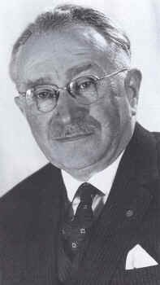

|  |
Em 1939, o neurologista alemão de origem judia Ludwig Guttmann foi forçado pelo governo nazista da Alemanha a deixar o país com sua família e se estabelecer na Inglaterra, trabalhando na Universidade de Oxford. Em 1943, Guttmann foi indicado pelo governo britânico para chefiar o Centro Nacional de Traumatismos na cidade de Stoke Mandeville, sendo sua principal missão a reabilitação de soldados que serviram na Segunda Guerra Mundial. Antes da Guerra não havia registros de grandes esforços para reabilitar deficientes físicos, cuja vida era considerada de curta duração e de má qualidade. Guttmann desenvolveu uma nova filosofia de tratamento para os seus pacientes que unia trabalho e esporte. Entre as modalidades usadas no tratamento estavam basquetebol, tiro com arco, dardos e bilhar. Com o sucesso do novo sistema, Guttmann promoveu, em 28 de julho de 1948, o primeiro evento esportivo exclusivo para portadores de deficiência. A data não foi escolhida por acaso, uma vez que no mesmo dia tinham início os Jogos Olímpicos de Londres, a apenas 56 km de Stoke Mandeville. Dois grupos de arqueiros paraplégicos participaram da competição. O evento continuou a ocorrer todos os anos, tornando-se internacional em 1952, quando quatro atletas dos Países Baixos competiram. O crescimento continuou de maneira acelerada até que, em 1960, a competição ocorreu pela primeira vez fora do Reino Unido. |
Os primeiros Jogos ParalímpicosNos Jogos Olímpicos de 1964 em Tóquio, no Japão, os Jogos Internacionais de Stoke Mandeville aconteceram alguns dias após o encerramento dos Jogos Olímpicos. Nesta época já era comum — principalmente para a imprensa — o uso do nome "Paralimpíadas" (contração de "paraplegia" e "olimpíadas") para designar o evento, principalmente quando este ocorria em paralelo com os Jogos Olímpicos, mesmo que por vezes em locais diferentes por motivos de inacessibilidade. A realização dos Jogos Olímpicos e Paralímpicos na mesma cidade foi interrompida em 1968, pois a Cidade do México desistiu por problemas financeiros e por falta de acessibilidade para pessoas em cadeira de rodas nos locais de competição. Tel Aviv, em Israel, se ofereceu como sede e a proposta foi aceita, recebendo a terceira edição dos Jogos. Em 1972, mais uma vez a sede dos Jogos Olímpicos não recebeu as Paralimpíadas. Munique, na Alemanha Ocidental, desistiu da ideia de organizar os Jogos por causa da falta de acessibilidade na Vila Olímpica e optou por vender os apartamentos logo após os Jogos Olímpicos, inviabilizando a hospedagem dos atletas. Heidelberg, no mesmo país, se ofereceu como alternativa através de sua universidade. |
Geopolítica, primeiras tentativas de cooperação e novos tipos de deficiênciaEm 1980, a União Soviética, que sediaria os Jogos Olímpicos de Verão do mesmo ano, foi convidada a sediar o evento. Entretanto, o esporte para deficientes no país não era suficientemente desenvolvido e teve notoriedade uma declaração que foi emitida, negando a existência de qualquer "inválido" por lá. A União Soviética enviou uma delegação pela primeira vez aos Jogos em 1988, exatamente os últimos jogos em que o país existiu. Em 2014, pela primeira vez na história os Jogos Paralímpicos foram realizados em solo da antiga URSS. Os Países Baixos ofereceram o recém inaugurado Centro Desportivo Nacional Papendal, em Arnhem, como sede dos Jogos e a proposta foi aceita. Durante estes jogos foi criado o Comitê Internacional de Coordenação, o ICC, em que cada federação estava representada. Nove anos mais tarde, esta instituição evoluiria para o Comitê Paralímpico Internacional. Houve tentativas do Comitê Olímpico Internacional de realizar os Jogos Paralímpicos de Verão de 1984 em Los Angeles, logo após os Jogos Olímpicos, entretanto, as conversas entre o LAOOC (Comitê Organizador dos Jogos Olímpicos de Los Angeles) e o ICC não aconteceram, já que as relações formais entre as instituições não existiam. Durante o processo organizacional desta edição, houve um "racha" entre as federações esportivas. Logo após os Jogos de Arnhem, a Associação Americana de Esportes em Cadeira de Rodas anunciou que iria realizar seus próprios Jogos para atletas dessa deficiência em um local separado, e assim escolheu o campus da Universidade de Illinois em Urbana-Champaign, a 217 quilômetros de Chicago. As novas categorias paralímpicas: deficientes visuais, amputados, paralisados cerebrais e os "les autres" foram disputadas em Nova Iorque, Estados Unidos. Três meses antes do evento, devido a problemas financeiros, Champaign renunciou ao evento e os "jogos em cadeiras de rodas" foram de última hora para Stoke Mandeville, no Reino Unido. |